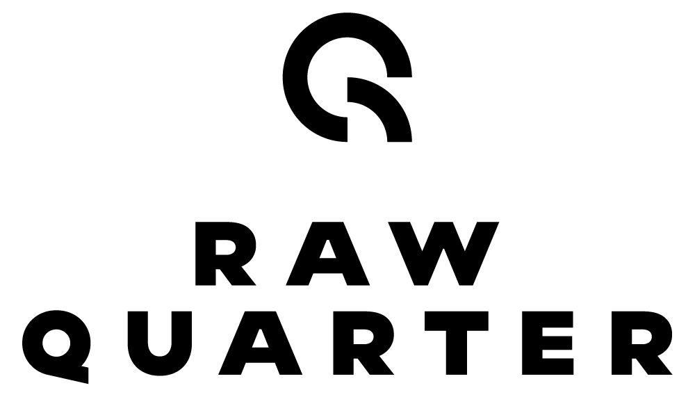

Raw Quarter is a premium essentials brand built around a single product done exceptionally well: the quarter zip.
In a market saturated with everything-brands, Raw Quarter does one thing. The quarter zip is having a cultural moment — driven by Gen Z on social media, adopted by everyone from the young creative to the business professional. We're here at the start of that wave, owning the niche before it gets crowded.
The name does the work quietly. Raw speaks to honesty — no excess, no performance, just quality. Quarter is both the product and the logo — a circle with a quarter missing, an icon that reads as R, as Q, as a garment detail. It doesn't explain itself. It doesn't need to.
Raw Quarter lives in the sweet spot between accessible and premium — quality enough to feel considered, priced to wear daily. It is not a luxury brand. It is not fast fashion. It is the brand you reach for because it looks right without trying.
| Brand | Price Point | Positioning |
|---|---|---|
| Elwood | $60–80 | Streetwear basics, broad appeal |
| Reigning Champ | $120–180 | Technical premium, athletic focus |
| Fear of God Essentials | $80–120 | Elevated basics, cultural cache |
| Kith | $100–200 | Lifestyle premium, collab-driven |
| Raw Quarter | $80–120 | Single-product premium, minimalist identity |
The quarter zip is not new. But owning it — designing every detail of one garment, launching a brand named after it — that's a different move.
Raw Quarter starts from a simple belief: that one well-made thing, worn consistently, says more than ten average things worn occasionally. The quarter zip is versatile by nature. You can layer it over a shirt for dinner. You can wear it Sunday morning at home. It works. It's always worked.
What's changed is the audience. Gen Z has rediscovered the quarter zip — not as the suburban dad staple it once was, but as an intentional choice. A silhouette that's clean, slightly structured, effortlessly elevated. Raw Quarter is here to give that instinct a brand worth belonging to.
Men and women, 18–34. Values quality over quantity. Prefers a minimal wardrobe of pieces that work. Wears brands that don't shout. Influenced by social media but not defined by it.
The Logo System operates across four applications: Primary (icon + horizontal wordmark), Secondary (icon + stacked wordmark), Icon-only, and Wordmark-only. Each serves a distinct application from swing tag to social avatar to embroidery.
The Icon is a geometric Q formed from 270° of a circle — three-quarters complete, one quarter open. Inside the arc, a secondary curve creates negative space that reads simultaneously as an R, a Q, and a circle with a quarter missing. A mark that rewards attention without demanding it.

All assets supplied in PDF (vector) + PNG formats.
Colour Palette
Typography: Geometric sans-serif, bold weight, all caps, extended letter-spacing (+100–150 tracking). The tracking is intentional — it slows the reader down. It signals confidence. It is not in a hurry.
Photography Direction: Editorial-clean studio + natural light lifestyle. Neutral backgrounds. The garment is the focus. Understated confidence — the person wearing it isn't trying to be seen. They just are.
Three words: Minimal. Honest. Considered.
Raw Quarter doesn't oversell. Copy is short. Statements are direct. The product speaks — the words just introduce it.
Hero Product: The Quarter Zip
Launch Colourways: Black / Grey Marle / Navy / Quarter Tan / Dusty Olive
Fabrication: Heavyweight fleece or French terry. Quality hand-feel is non-negotiable. The product has to earn the price point the moment you touch it.
Construction: Clean seams, minimal external branding, quality metal zipper hardware. Icon logo embroidered at chest — subtle placement, confident mark.
Sizing: Unisex-forward sizing. Inclusive range from XS–3XL.
Year 2+ extensions: Tee, hoodie, track pant — only if quality standard is maintained. Raw Quarter expands slowly and deliberately. No noise. No filler products.
Raw Quarter is the ideal first test case for the Brand Incubator model.
Summary
One product. Clean identity. Real market timing.
A supply chain model — through Ghost Builder and Future Fulfilment — that makes it executable without the overhead of a traditional brand launch.
This is what Brand Incubator is for.